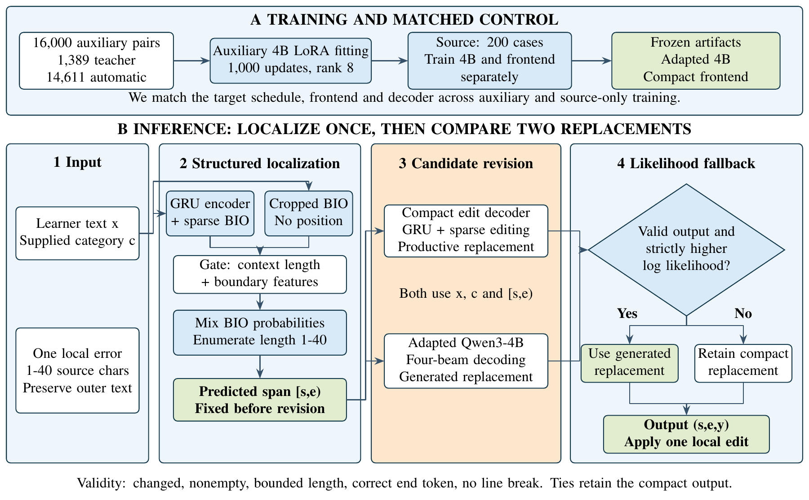
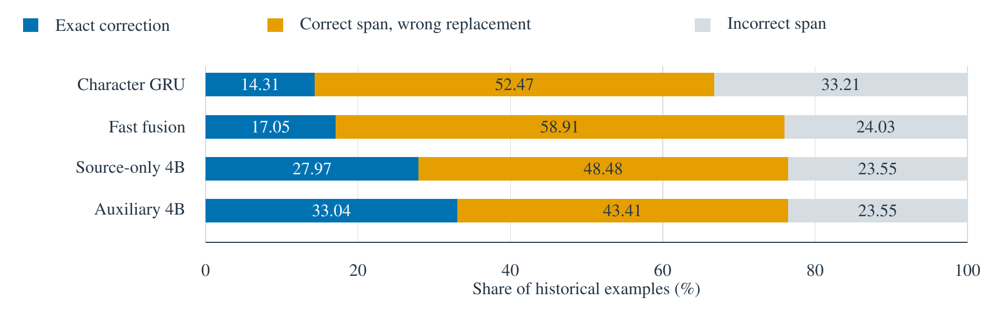
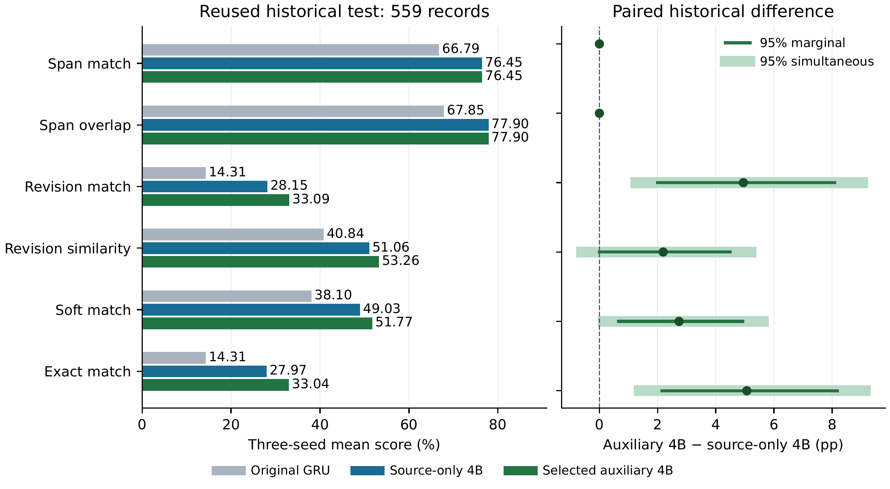
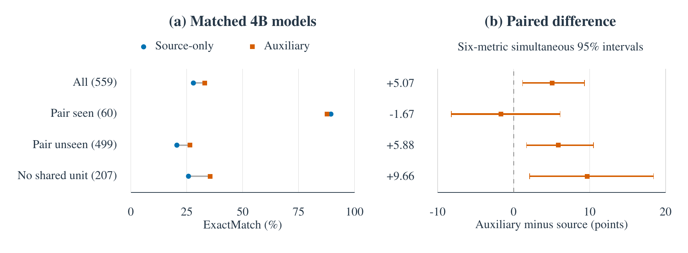
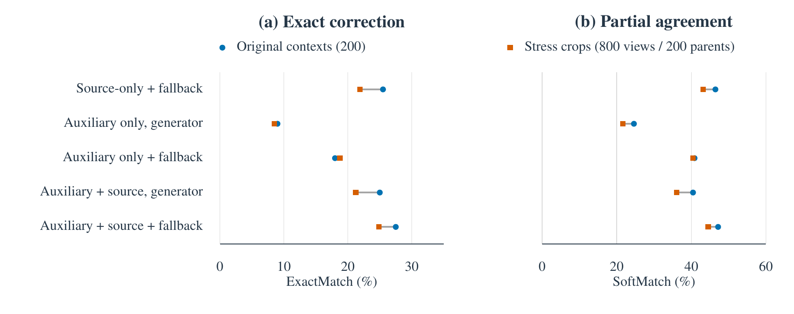

Compact frontend
4.235 million stored values across recurrent, sparse and context-gating components. CPU inference is available separately.
Japanese NLP · Research artifact · 2026
SLA-JEC: Structured Localization and Auxiliary Adaptation
for Japanese Grammatical Error Correction
SLA-JEC combines GRU-based localization, sparse editing, context gating and auxiliary adaptation to produce one focused Japanese correction.
Dataset release v2.1.0 · Model/metadata release v2.0.0 · Manuscript revised 2 October 2026
01 / Method
The context-gated GRU and sparse frontend choose one interval and a local edit. The Qwen3-4B decoder proposes a replacement for that same interval. A valid generation is used only when its normalized log likelihood is strictly higher; otherwise, the compact edit stays.

4.235 million stored values across recurrent, sparse and context-gating components. CPU inference is available separately.
16,000 simulated error pairs, followed by ten source-fitting epochs on 200 development examples. Three final seeds are provided.
Four-beam generation, a fixed interval, output checks and an EOS-inclusive likelihood comparison preserve the local correction contract.
02 / Open datasets
We open-source the 50,000-pair JWTD training component of JEC-Mix 1.0, with full source sentences, corrections, automatic spans and Wikipedia revision provenance. This derived subset covers 40,439 article groups and is licensed under CC BY-SA 3.0.
The JWTD component is full-text training data. Native article/revision metadata, typo categories, line hashes and derived spans are retained. Publisher test/gold are excluded and were not parsed.
The whole 110,502-record mix is not fully open, and these records are not all human learner annotations. Learner, teacher/synthetic and protected texts are excluded from public release.
Existing weights predate JWTD. In a later matched locator study, the Wikipedia arm was weaker than its NoWiki control. This dataset release supplies no new model weights and makes no SOTA claim.
CAMC-JL v2.0.0 provides an open evaluation dataset: a 759-record metadata index and 10,062 per-example numerical records from six methods and three seeds.
Learner sentences, gold corrections and raw predictions are excluded. The source texts remain subject to Natane and ICJS/TUFS access conditions.
This metadata/results release supports numerical reanalysis. Its learner component is not a full-text training corpus, and text-level rescoring requires separate lawful source access.
License: CC BY 4.0 for author-created metadata and results.
03 / Evidence
Auxiliary plus source adaptation reaches 33.04% ExactMatch, compared with 27.97% for the matched source-only 4B model.
The paired gain is 5.07 percentage points, with a six-metric-adjusted interval of [1.18, 9.32]. Localization ties. The incremental RevisionSimilarity and SoftMatch intervals include zero.
Historical test reuse, source overlap and poor external localization limit generalization. These results do not establish classroom effectiveness or global state of the art.
| Method | ExactMatch |
|---|---|
| Character GRU | 14.31% |
| Productive fusion | 17.05% |
| 1.7B auxiliary/source | 26.77% |
| 1.7B context frontend | 26.71% |
| Matched 4B source-only | 27.97% |
| 4B auxiliary + source | 33.04% |
The same 559 historical cases; values are percentages.




04 / Reproduce
The release includes the portable inference method, an adapter-training implementation, three trained 4B adapters and the compact frontend. Large weights are delivered as GitHub Release assets with SHA-256 checksums.
pip install numpy==2.3.1 torch==2.11.0
python scripts/download_weights.py --frontend-only
python model/frontend/predict.py --list-error-typesRun these commands from the cloned repository. The README includes the full 4B setup and inference examples.
python scripts/reproduce_results.pyThe script recomputes historical means and paired cluster intervals using released numerical records. The upstream 4B base is downloaded separately at an immutable revision.
Existing 4B weights were validated locally on GPU. This dataset release adds no model weights.
CAMC-JL contributors (2026). SLA-JEC: Structured Localization and Auxiliary Adaptation for Japanese Grammatical Error Correction. Research manuscript and CAMC-JL metadata-and-results dataset, v2.0.0.
For the JEC-Mix JWTD component, cite the original JWTD authors and JEC-Mix contributors (2026), version 1.0, repository release v2.1.0. BibTeX and source attribution.
A journal DOI is not yet available. Cite the repository URL and release version when reusing the artifact.